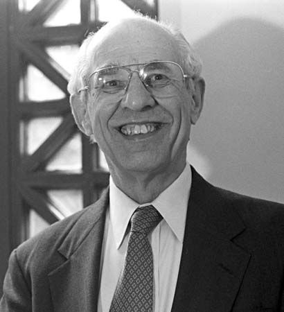
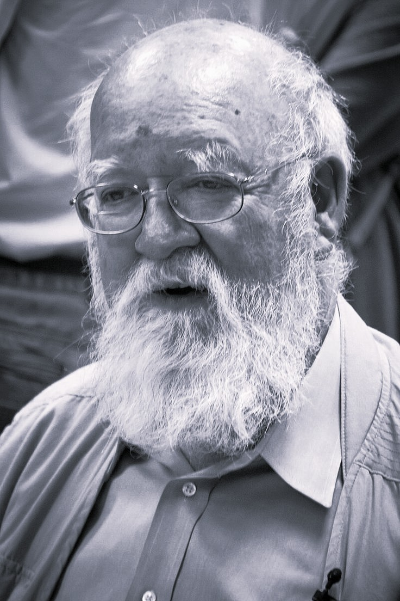

The field of philosophy concerned with the nature of the mind,
consciousness, thought, perception, emotion, intention, personal
identity, and the relationship between mental life and the physical
world.
What Is Philosophy of Mind?
Philosophy of Mind is the branch of philosophy that investigates the
nature of the mind, consciousness, mental states, and their relationship
to the body and the physical world. It asks what it means to have a
mind, what consciousness is, how thoughts and experiences relate to the
brain, and whether mental phenomena can ultimately be explained in
physical terms. Philosophy of mind therefore examines both ordinary
features of mental life and deeper questions about what kind of beings
conscious creatures are. Perception, memory, imagination, emotion,
belief, desire, intention, reasoning, self-awareness, and personal
identity all become philosophical subjects when we ask what they are and
how they are possible.
What is the mind? Is the mind a substance, a
collection of mental states, a functional system, a biological
process, or something else?
What is consciousness? What does it mean for an
organism to have subjective experience or awareness?
What is a mental state? How should beliefs, desires,
intentions, emotions, perceptions, memories, and thoughts be
understood?
How is the mind related to the brain? Are mental
processes identical with neural processes, caused by them, realized by
them, or fundamentally different from them?
Can the mind exist without the body? Could
consciousness, thought, or personal identity survive the destruction
of the biological brain?
Can machines have minds? If an artificial system
behaves intelligently, does that demonstrate genuine understanding,
mentality, or consciousness?
What makes someone the same person over time? Is
personal identity grounded in the body, psychological continuity,
memory, consciousness, or another relation?
One of the central problems in philosophy of mind is the
mind-body problem: what kind of relationship exists
between mental phenomena and physical phenomena? Human beings possess
physical bodies and brains, yet they also experience pain, colors,
sounds, emotions, thoughts, desires, and conscious awareness. A complete
account of the mind must therefore explain how these apparently
different aspects of human existence are related. Philosophers have
developed competing positions, including dualism, physicalism, idealism,
functionalism, property dualism, emergentism, and other theories of
mind. The disagreement concerns not only what the mind is but also what
kinds of explanation are required to account for mentality.
Dualism: The view that mental phenomena are not
simply identical with physical phenomena, with some forms
distinguishing mind and body as fundamentally different kinds of
reality.
Physicalism: The view that everything that exists is
ultimately physical, or that mental phenomena are fully grounded in
the physical world.
Functionalism: The view that mental states can be
understood partly in terms of their functional or causal roles rather
than solely by their physical composition.
Idealism: Philosophical positions that give mind,
experience, or the mental a fundamental role in the structure of
reality.
Property dualism: The view that mental properties may
be fundamentally different from physical properties even when they
depend on physical systems.
Emergentism: Approaches that understand consciousness
or other mental properties as arising from sufficiently complex
physical systems while remaining philosophically significant as
higher-level phenomena.
Consciousness is one of the deepest problems within philosophy of mind.
Philosophers distinguish between being awake, being aware of something,
having experiences, and possessing particular kinds of subjective
phenomenal states. A person can know that pain involves neural activity,
for example, while still asking what makes pain feel the way it does.
This leads to questions about qualia, subjective
experience, the first-person perspective, and the so-called
hard problem of consciousness. Other questions concern
whether consciousness can be explained entirely through functional or
computational descriptions, whether conscious experience is biologically
specific, and whether there could be beings that behave like conscious
creatures without possessing subjective experience.
Phenomenal consciousness: What is it like to see,
hear, feel pain, experience emotion, or undergo another conscious
state?
Qualia: What is the philosophical significance of the
subjective or phenomenal character of experience?
The hard problem of consciousness: Why and how should
physical processes in the brain give rise to subjective experience at
all?
Access consciousness: How are conscious states
related to information that can be used in reasoning, reporting,
planning, and deliberate action?
Self-awareness: What does it mean to be aware of
oneself as a subject of experience?
Altered consciousness: What can philosophical
analysis of dreams, perception, attention, and other altered states
tell us about the nature of conscious experience?
Philosophy of mind also investigates the content and structure of
thought. Human beings do not merely experience sensations; they believe
that things are true, desire particular outcomes, intend to perform
actions, remember events, imagine possibilities, and think about objects
that may not exist. This gives rise to the philosophical problem of
intentionality, or the capacity of mental states to be
about or represent something. Philosophers ask how thoughts can possess
meaning, how mental representations relate to the external world, and
whether intentionality can be explained in entirely physical,
computational, linguistic, or functional terms.
Intentionality: How can beliefs, desires, thoughts,
and other mental states be about objects, events, properties, or
situations?
Belief: What makes a mental state a belief, and how
are beliefs related to truth, evidence, reasoning, and action?
Desire: How do desires motivate behavior, and what
distinguishes desire from intention or preference?
Intention and agency: How do conscious intentions
relate to deliberate action and practical reasoning?
Perception: Is perception a direct awareness of the
external world, a form of representation, or a constructive process
involving the mind and brain?
Memory and imagination: What makes a memory different
from imagination, and how do both contribute to personal identity and
knowledge?
Philosophy of mind overlaps closely with psychology, neuroscience,
cognitive science, linguistics, computer science, and artificial
intelligence, but philosophical questions about mentality cannot always
be settled simply by collecting empirical data. Neuroscience can
investigate which neural processes accompany particular experiences,
while philosophy can ask what would count as an adequate explanation of
consciousness, whether neural activity is identical with mental
experience, and whether subjective awareness can be captured by an
objective description. The relationship between scientific explanation
and philosophical analysis is therefore central to contemporary
philosophy of mind. The field engages seriously with empirical research
while continuing to examine conceptual questions about explanation,
identity, representation, causation, and experience.
Neuroscience and the mind: What can studies of the
brain tell us about consciousness, perception, memory, emotion, and
cognition?
Psychology and mental explanation: How should mental
states and behavior be explained at psychological and computational
levels?
Cognitive science: Can cognition be understood
through information processing, representation, computation,
embodiment, or other explanatory frameworks?
Artificial intelligence: Would sufficiently
sophisticated information processing amount to genuine thought,
understanding, or consciousness?
Philosophy of neuroscience: What philosophical
assumptions are involved when neuroscientific findings are used to
make claims about the mind?
Embodied and extended cognition: Is cognition
confined to the brain, or can bodily activity, environmental
structures, and external tools partly constitute cognitive processes?
The philosophy of mind also examines personal identity, other minds,
mental causation, free will, and human agency. If psychological
continuity rather than the biological body is what matters for personal
identity, what would happen in cases involving memory loss, brain
transplantation, duplication, or radical changes in psychological
character? If mental states are physical states, how can they cause
physical behavior without becoming causally redundant? And if conscious
decisions are determined by prior physical processes, what becomes of
freedom and responsibility? These questions connect philosophy of mind
with metaphysics, epistemology, philosophy of action, ethics, and the
philosophy of personal identity.
Personal identity: What makes a person remain the
same individual through physical and psychological change?
Other minds: How can we know that other people or
creatures have conscious experiences rather than merely behaving as if
they do?
Mental causation: How can thoughts, intentions, and
experiences cause physical actions if the physical world is causally
complete?
Free will: Can conscious agents genuinely control
their actions, and how does mental agency relate to determinism?
Animal minds: Which non-human animals possess
consciousness, self-awareness, emotions, or other forms of mentality?
Artificial minds: Could an artificial system ever
possess genuine beliefs, intentions, understanding, or subjective
experience?
At its deepest level, Philosophy of Mind asks what kind of beings
conscious creatures are and what place mentality occupies in reality. If
consciousness is entirely physical, philosophers must explain how
subjective experience, intentionality, reasoning, and agency fit into a
physical account of the world. If mental phenomena cannot be completely
reduced to physical descriptions, alternative accounts must explain
their relationship to the brain and physical processes without
abandoning explanatory rigor. These questions make philosophy of mind a
central field connecting metaphysics, epistemology, philosophy of
language, ethics, philosophy of science, cognitive science, and theories
of human nature. It is therefore not simply the study of the brain or
psychology, but a philosophical investigation into what it means to
think, experience, perceive, act, and be conscious.
The Mind–Body Problem
The mind–body problem concerns the relationship between mental phenomena
and physical phenomena. Human beings have physical brains and nervous
systems, but they also experience thoughts, emotions, sensations,
intentions, memories, desires, and conscious awareness. The central
philosophical question is whether these mental phenomena can be
completely understood in terms of physical processes or whether
mentality possesses features that cannot be captured by a purely
physical description. This problem therefore concerns not simply the
existence of the brain, but the metaphysical status of the mind and the
relationship between subjective experience and the physical world.
René Descartes gave the problem one of its most influential
formulations. His substance dualism distinguishes mind, understood as a
thinking substance, from body, understood as an extended physical
substance. Descartes argued that thought and extension have
fundamentally different attributes and therefore cannot simply be
identified with one another. His position generated a lasting
philosophical difficulty: if mind and body are fundamentally different
kinds of substance, how can they causally interact? The problem of
interaction became one of the central questions inherited by later
philosophy of mind.
Materialist and physicalist theories reject the conclusion that mental
phenomena require a separate non-physical substance. Contemporary
physicalism generally holds that reality is fundamentally physical or
that everything that exists is wholly dependent upon the physical world.
However, physicalism includes several competing approaches. Some
theories identify mental states with brain states, while others argue
that mental states are realized by physical systems without being
identical to one particular neural state. Functionalist approaches, for
example, explain mental states partly in terms of the causal roles they
perform within a cognitive system.
The mind–body problem also raises questions about mental causation,
intentionality, perception, personal identity, and consciousness. If
mental states are physical, philosophers must explain why physical
processes have the mental properties we experience. If mental states are
not physical, philosophers must explain how they interact with physical
events without violating the causal structure of the physical world.
These questions connect philosophy of mind with metaphysics, philosophy
of science, philosophy of psychology, and the study of human cognition.
The mind–body problem therefore cannot be reduced to the simple question
of whether the brain is important. Almost every contemporary
philosophical position gives substantial importance to the brain and
nervous system. The deeper issue concerns what kind of relationship
exists between neural activity and conscious experience, thought,
intention, representation, and other mental phenomena. Understanding
this relationship remains one of the foundational problems of
contemporary philosophy of mind.
Dualism and Theories of the Mind
Dualism is a family of views holding that mental
phenomena cannot be adequately identified with physical phenomena.
Substance dualism, associated especially with Descartes, maintains that
mind and body are distinct kinds of substance. Other forms of dualism do
not necessarily claim that there are two substances; they may instead
argue that mental properties are fundamentally different from physical
properties. Dualism therefore covers several philosophical positions
rather than constituting one single theory of consciousness or
mentality.
Substance dualism treats the mind as fundamentally distinct from the
physical body, traditionally characterizing the mind in terms of
thought, awareness, or consciousness and the body in terms of spatial
extension and physical processes. This distinction creates the famous
interaction problem: if mental and physical substances have
fundamentally different natures, how can an intention produce a bodily
movement or a physical injury produce a conscious sensation of pain?
Later philosophers proposed different responses, including
interactionism, occasionalism, and forms of parallelism, although none
became a universally accepted solution.
Property dualism offers a different approach. It can
hold that there is one physical world while maintaining that physical
systems possess genuinely mental properties that are not reducible to
physical properties. On such a view, conscious experience may depend
upon physical processes without being identical to the physical
properties described by neuroscience. Property dualism is therefore
particularly relevant to debates about phenomenal consciousness, qualia,
and the subjective character of experience.
Dualist theories face the continuing challenge of explaining the causal
relationship between mental and physical events. If conscious
experiences are not themselves physical, how can they influence bodily
behavior? If a mental decision causes a person's physical movement, what
explains that causal relationship? A related concern is causal
completeness: if every physical event already has a sufficient physical
cause, philosophers must explain whether an additional mental cause
would result in causal overdetermination or whether mental causation
should instead be understood differently.
Contemporary discussions of dualism often focus less on an immaterial
"mind substance" and more on whether subjective experience can be fully
explained by physical descriptions. Arguments involving consciousness,
conceivability, explanatory gaps, and the first-person perspective have
therefore kept dualist ideas relevant even among philosophers who reject
classical Cartesian substance dualism. The broader philosophical
question remains whether the mental can ultimately be reduced to,
identified with, or completely explained by the physical.
Physicalism and the Mind
Physicalism is the general view that reality is
fundamentally physical or that everything that exists ultimately depends
upon the physical world. In philosophy of mind, physicalism usually
maintains that mental phenomena are either physical phenomena or are
wholly dependent upon physical processes. It has become one of the
dominant positions in contemporary philosophy of mind, partly because
modern neuroscience provides extensive evidence connecting mental
capacities with brain activity. Nevertheless, physicalism is not a
single theory and philosophers disagree about precisely what it means
for the mental to be physical.
Identity theory proposes that mental states are
identical with physical or neural states. For example, a particular kind
of pain might be identified with a particular type of neural state. This
approach offers a direct account of the relationship between mind and
brain, but it faces questions about whether the same mental state could
be realized by different physical systems. The possibility of multiple
realization became an important motivation for functionalist theories,
which distinguish the causal role of a mental state from the particular
physical structure that realizes it.
Functionalism takes a different approach. Instead of
defining mental states primarily by their physical composition,
functionalism characterizes them by the causal roles they play within a
system. A mental state such as pain might be understood partly in terms
of its typical causes, its relationships with other mental states, and
its behavioral effects. This makes functionalism compatible with the
possibility that similar mental functions could be realized in very
different physical systems, including organisms with different
biological structures or potentially artificial systems.
Other forms of physicalism emphasize supervenience, realization, or
dependence rather than straightforward identity. A supervenience claim,
for example, can express the idea that there can be no mental difference
without some underlying physical difference, without automatically
identifying each mental property with one particular physical property.
Such approaches attempt to preserve the dependence of mentality on the
physical while allowing psychological explanations to retain their own
concepts and levels of description.
Physicalist theories must also address consciousness. Even if every
mental state has a physical basis, philosophers can still ask whether a
physical explanation tells us why an experience feels the way it does.
This concern is central to debates about phenomenal consciousness and
the explanatory gap between physical descriptions and subjective
experience. Questions about qualia, the hard problem of consciousness,
mental causation, and intentionality therefore remain important tests
for contemporary forms of physicalism.
Consciousness
Consciousness is perhaps the most famous and difficult problem in
philosophy of mind. In ordinary language, consciousness can refer to
wakefulness, awareness of one's surroundings, self-awareness, access to
information, or subjective experience. Philosophers therefore
distinguish different aspects of consciousness rather than assuming that
the word refers to one simple phenomenon. A philosophical theory of
consciousness must explain what consciousness is, how it relates to
perception and cognition, and why certain physical or functional
processes are accompanied by experience.
A central distinction is between
phenomenal consciousness and other forms of mental
functioning. Phenomenal consciousness concerns what an experience feels
like from the subject's point of view. Seeing a red object, tasting
something bitter, experiencing pain, hearing music, or feeling warmth
involves a subjective character that appears accessible from the
first-person perspective. Philosophers often refer to this subjective
character when discussing the "what-it-is-like" aspect of conscious
experience.
Consciousness also has an important relationship with awareness and
cognition. A person can process information without necessarily being
consciously aware of that processing. This raises questions about
whether consciousness is necessary for intelligent behavior, whether
every mental process is conscious, and whether subjective experience can
be separated from the functional processing performed by a cognitive
system. Research into attention, perception, memory, sleep, anesthesia,
and altered states of consciousness provides scientific evidence that
can inform these philosophical questions without automatically resolving
their conceptual foundations.
Philosophers also distinguish consciousness from self-consciousness. A
conscious organism may experience sensations or perceive its environment
without possessing a sophisticated concept of itself. This raises
questions about whether self-awareness is an additional form of
consciousness, how a sense of self develops, and whether consciousness
requires the capacity to represent one's own mental states. These issues
connect consciousness with personal identity, intentionality,
perception, memory, and theories of the self.
The philosophical challenge becomes especially difficult when we attempt
to explain why physical processes are accompanied by subjective
experience at all. A scientific description can investigate what neurons
do, how information is processed, and which brain systems correlate with
conscious states. Philosophy asks whether such explanations would fully
account for the existence and character of conscious experience or
whether something conceptually remains unexplained. This question lies
at the center of contemporary debates about the nature of consciousness.
Qualia and Subjective Experience
The term qualia is commonly used in philosophy to
discuss the subjective or phenomenal character of experience. The pain
of a headache, the appearance of a particular color, the taste of
coffee, or the sound of music seems to involve a way of experiencing the
world from a particular perspective. Philosophers debate how these
subjective qualities should be understood and whether they present a
special challenge for physicalist theories of mind.
The philosophical importance of qualia arises from the apparent
difference between describing an experience objectively and undergoing
it subjectively. Someone may know extensive scientific information about
the visual system while still asking whether that information captures
what it is like to see a particular color. This distinction has become
central to arguments about whether phenomenal consciousness can be
reduced to physical information and whether a complete third-person
description necessarily provides a complete account of first-person
experience.
The concept of qualia is closely connected with the problem of
subjective consciousness. If two people have physically similar brains
and report similar experiences, does that establish that their
experiences have the same phenomenal character? Conversely, could two
systems be functionally identical while differing in what their
experiences feel like? Such questions are used to investigate whether
phenomenal properties are determined by physical and functional facts or
whether consciousness involves additional fundamental features.
Not all philosophers agree that qualia constitute private, ineffable
objects inside the mind. Some philosophers reject the traditional
concept of qualia altogether, arguing that it encourages misleading
assumptions about introspection, representation, or mental architecture.
Others regard phenomenal character as a genuine feature of experience
that any adequate theory of consciousness must explain. The debate
therefore concerns not only what experiences are like, but also how
experiences should be described and what kinds of philosophical
explanation are legitimate.
The Hard Problem of Consciousness
David Chalmers famously distinguished what he called the "hard problem"
of consciousness from the many problems concerning cognitive functions.
The so-called easy problems are not necessarily easy in practice;
rather, they concern explaining functions such as discrimination,
information integration, report, attention, learning, memory, and
behavioral control. The hard problem asks why these functions are
accompanied by conscious experience at all. It therefore concerns the
transition from an account of what a system does to an account of why
there is something it is like to be that system.
The problem becomes especially apparent when we distinguish between
explaining a system's behavior and explaining its subjective experience.
A theory might explain how information about tissue damage is
transmitted, how the brain processes that information, how a person
reports pain, and how the nervous system initiates protective behavior.
The philosophical question is whether those explanations also account
for the experience of pain itself. In other words, does explaining the
functional organization of a conscious system fully explain why that
organization is accompanied by phenomenal experience?
Chalmers's formulation does not by itself establish that consciousness
is non-physical. Instead, it identifies an explanatory challenge for
theories that seek to explain consciousness entirely in functional or
physical terms. Physicalists have responded in several ways, including
attempts to argue that phenomenal consciousness can be explained through
physical facts, functional organization, representational content,
higher-order theories, or alternative accounts of what an explanation of
consciousness should accomplish. Other philosophers argue that the
apparent problem results from mistaken assumptions about concepts,
introspection, or explanation.
The hard problem is also connected with philosophical thought
experiments such as the philosophical zombie and Frank Jackson's
knowledge argument. These arguments are designed to test whether
complete physical or functional knowledge would necessarily determine
phenomenal knowledge. Supporters and critics disagree about what such
thought experiments demonstrate, but they have become central to debates
about physicalism, dualism, qualia, conceivability, and the explanatory
gap.
The hard problem has become one of the defining contemporary debates in
philosophy of mind because it forces philosophers to ask what counts as
an adequate explanation of consciousness. The disagreement concerns not
merely scientific facts but also the structure of explanation, the
nature of subjective experience, the relationship between first-person
and third-person descriptions, and the possibility of reducing
phenomenal properties to physical or functional properties.
Intentionality: The Aboutness of the Mind
Intentionality refers to the capacity of mental states
to be about, represent, or be directed toward something. A person can
believe that it is raining, hope that a friend arrives safely, fear an
approaching danger, remember a historical event, or imagine a fictional
character. Mental states can therefore possess a directedness toward
objects, events, properties, situations, or propositions. Intentionality
is consequently one of the major concepts used to distinguish mental
representation from purely physical processes.
Intentionality creates a distinctive philosophical problem because the
object of a thought does not have to exist. A person can think about a
unicorn, imagine a fictional city, remember a deceased person, or fear
an event that never occurs. A theory of mind must therefore explain how
mental representation works without simply identifying every intentional
object with a physically existing object. This raises further questions
about reference, mental content, representation, truth, and the
relationship between thought and reality.
Philosophers have developed different theories of representation and
intentionality. Some accounts emphasize causal relationships between
organisms and their environments, while others emphasize functional
roles, inferential relationships, internal representations, linguistic
structures, or the contents assigned through social and interpretive
practices. Philosophers also ask whether intentionality is a basic
feature of mentality or whether it can ultimately be explained in
naturalistic terms through perception, action, information processing,
and biological functions.
Intentionality is closely connected with philosophy of language because
beliefs, judgments, desires, hopes, and other mental states are often
expressed through language. Understanding how thoughts represent the
world therefore requires examining the relationship between mental
content, concepts, propositions, perception, and linguistic meaning.
Questions about intentionality also connect philosophy of mind with
epistemology because what a person believes and how those beliefs
represent reality affect questions about knowledge, error, rationality,
and justified belief.
Intentionality also raises questions about non-human and artificial
minds. Animals clearly respond to their environments in complex ways,
but philosophers debate whether their behavior should be understood in
terms of genuine mental representation. Similarly, an artificial system
may process symbols or information that refer to objects without
necessarily possessing human-like understanding. These questions make
intentionality important to contemporary debates about artificial
intelligence, cognitive science, and the nature of thought itself.
Perception, Representation, and the External World
Perception raises questions about how the mind gains knowledge of the
external world. When a person sees a tree, hears a sound, smells a
flower, or feels heat, what exactly occurs? Do we directly perceive
objects in the external world, or do we experience internal
representations generated by sensory systems? The answer affects
theories of perception, consciousness, knowledge, and the relationship
between mind and reality. Perception is therefore both a psychological
process and a major philosophical problem.
Philosophers have long distinguished perception from illusion and
hallucination. In ordinary perception, an experience may correspond to
an external object, while an illusion involves an existing object being
perceived inaccurately and a hallucination appears to occur without the
corresponding external object. If perceptual experiences can sometimes
be phenomenally similar across these cases, philosophers face the
challenge of explaining what perception fundamentally consists of and
whether ordinary perception gives us direct access to objects
themselves.
Direct realism maintains, in broadly different forms,
that perception can put us in direct perceptual relation with objects
and features of the external world. Other theories emphasize
representational content, according to which perceptual
experience represents the world as being a certain way. Historical
sense-data theories instead treated immediate perceptual awareness as
involving internal sensory objects or data. These competing approaches
disagree about what the mind is directly aware of when perception
occurs.
Contemporary philosophy of perception also includes embodied and
enactive approaches, which emphasize the active relationship between an
organism and its environment. On these views, perception may not be best
understood as passive reception of an internal picture of reality.
Bodily capacities, movement, environmental structures, and practical
engagement can all play important roles in perceptual experience. These
approaches connect philosophy of perception with philosophy of mind,
cognitive science, phenomenology, and theories of embodied cognition.
Perception therefore occupies an important position between mind and
world. It raises questions about representation, sensory experience,
error, objectivity, and knowledge while also providing a bridge between
conscious experience and the physical environment. Understanding
perception requires explaining both how organisms successfully interact
with their surroundings and how perceptual experience presents a world
to a conscious subject.
The Self and Personal Identity
Philosophy of mind also asks what makes a person the same person over
time. Human beings undergo continuous physical and psychological change,
yet we ordinarily regard a person today as the same individual who
existed years earlier. The philosophical problem is to determine what
grounds this persistence. Is personal identity based on the continuity
of the body, the brain, memory, personality, consciousness,
psychological connections, or some deeper metaphysical fact about the
individual?
One possibility is bodily continuity: a person remains
the same because the same living human organism continues to exist.
Another approach emphasizes psychological continuity,
connecting personal identity with memory, intentions, beliefs,
personality, character, values, and other psychological relationships.
Different theories give different accounts of which forms of continuity
matter and whether identity requires a continuous physical organism or
can survive major bodily change.
John Locke famously connected personal identity with consciousness and
memory, although the details of Locke's account are more complex than
the simple claim that "memory makes a person." Later philosophers
developed and criticized psychological-continuity theories, including
thought experiments involving memory transfer, bodily replacement,
duplication, and branching identities. These cases are designed to
separate the different features that ordinarily accompany one another in
human life.
Modern discussions also distinguish numerical identity from
psychological similarity or survival. If a person's psychological
characteristics could continue in another individual, that might
establish an important form of psychological continuity without
necessarily establishing numerical identity. Derek Parfit famously used
duplication and branching cases to challenge the assumption that there
must always be one determinate answer to every question about personal
identity. His work encouraged philosophers to examine whether
psychological continuity and connectedness may sometimes matter more
than strict numerical identity.
Personal identity has practical consequences beyond abstract
metaphysics. Questions about responsibility, punishment, promises,
relationships, inheritance, memory, and future planning all depend on
assumptions about who remains the same person over time. Cases involving
dementia, severe psychological change, brain transplantation, or
hypothetical copying therefore reveal how metaphysical theories of
identity can affect moral, legal, and social questions about persons.
The Problem of Other Minds
Each person has direct access to their own experiences but not
apparently to the private experiences of other people. We observe
behavior, speech, facial expressions, bodily responses, and biological
activity, but we do not directly experience another person's
consciousness. The
problem of other minds asks how we can know or
reasonably believe that other people have minds and conscious
experiences like our own. It is therefore a problem about knowledge,
inference, and the nature of subjective experience.
The problem is closely related to philosophical skepticism. If
consciousness is fundamentally subjective, how can evidence available
from an external perspective establish that another individual has an
inner life? The existence of other minds is ordinarily treated as
obvious in practical life, but philosophy asks what justifies that
assumption. The problem becomes particularly significant because the
same behavioral evidence might conceivably be interpreted in different
ways by different theories of mind.
Analogical reasoning has historically been one proposed response:
because one's own behavior is associated with mental states, similar
behavior in other people may provide reason to attribute similar states
to them. Other approaches emphasize language, behavioral criteria,
shared forms of life, inference to the best explanation, or the
biological similarities among human beings. These approaches differ over
whether knowledge of other minds is primarily inferential or whether
attributing mental states to others is a more basic feature of
interpersonal understanding.
The problem also connects with questions about whether consciousness can
be scientifically identified through observable behavior or neurological
activity. If subjective experience is accessible only from the
first-person perspective, philosophers must consider what kinds of
third-person evidence can legitimately support claims about
consciousness. This issue is especially important when studying
individuals who cannot communicate normally, altered states of
consciousness, and organisms whose behavior differs substantially from
human behavior.
The problem becomes even more interesting when applied beyond human
beings. Animals exhibit complex behavior, communication, learning,
memory, and adaptive abilities, raising questions about the distribution
of consciousness across species. Artificial intelligence introduces a
further challenge: what kinds of evidence would justify attributing
mentality or consciousness to a non-biological system? The problem of
other minds therefore connects philosophy of mind with animal cognition,
artificial intelligence, epistemology, neuroscience, and the broader
question of what evidence is sufficient for attributing a mind.
Mental Causation
Mental causation concerns whether thoughts, intentions, beliefs,
desires, emotions, and decisions can genuinely cause physical events. We
ordinarily say that a person's decision caused them to raise their hand,
or that fear caused them to run. Yet if physical events have sufficient
physical causes, philosophers ask what causal role remains for mental
states. The problem therefore connects the philosophy of mind with
broader questions about causation, explanation, agency, and the
structure of reality.
This problem is particularly significant for physicalism and dualism. A
dualist theory must explain how non-physical mental states can influence
physical processes, while a physicalist theory must explain how mental
descriptions remain causally significant if physical descriptions
already provide a complete causal account of bodily behavior. This
produces the so-called causal exclusion problem: if a physical cause is
already sufficient for an event, what additional causal work can a
mental cause perform?
Some philosophers argue that mental states are causally relevant because
they are realized by physical processes at an appropriate level of
description. On this approach, saying that a person's belief caused an
action need not introduce a separate mental force in addition to the
underlying physical processes. Other philosophers emphasize functional
or explanatory relationships, arguing that psychological explanations
can be causally informative even when the same event also admits a
detailed neurobiological description.
Mental causation is also closely connected with intentionality and
rational explanation. A person's belief that a bridge is unsafe can
explain why they avoid crossing it, while their desire to reach the
other side can explain why they choose a particular route. Such
explanations appeal to reasons, beliefs, goals, and intentions rather
than merely to neural activity. Philosophy therefore asks whether
explanations at the personal or psychological level can coexist with
explanations at the physical level without reducing one to the other.
The debate demonstrates that explaining the mind requires careful
attention to what philosophers mean by "cause." Mental causation may
involve realization, dependence, functional organization, reasons, or
different levels of causal explanation rather than a competition between
separate mental and physical forces. The issue remains central to
questions about agency, free will, consciousness, and the relationship
between psychology and neuroscience.
Free Will, Agency, and the Mind
The philosophy of free will asks whether human beings can genuinely
control their actions and whether such control is compatible with causal
determination. The problem becomes especially important in philosophy of
mind because decisions, intentions, desires, deliberation, and conscious
reflection appear to play a role in human agency. A philosophical theory
of free will must therefore explain what it means for an action to be
genuinely one's own and what kind of control is required for
responsibility.
Determinism is the view that events are determined by
prior conditions together with the relevant laws or regularities of
nature. If every human action is determined by prior physical
conditions, some philosophers argue that genuine freedom is impossible
because the agent could not have acted otherwise under exactly the same
conditions. Others defend compatibilism, maintaining
that freedom does not require the absence of causation but can instead
involve acting according to one's reasons, desires, values, and
capacities without inappropriate coercion or constraint.
Libertarian theories of free will, in the philosophical
sense, maintain that genuine freedom is incompatible with determinism.
Different libertarian theories explain undetermined agency in different
ways, including views that appeal to agent causation or forms of
indeterministic decision-making. Hard determinist
approaches, by contrast, reject the compatibility of genuine free will
with determinism and conclude that the kind of freedom traditionally
associated with ultimate moral responsibility is unavailable if
determinism is true.
Philosophers also distinguish freedom of action from freedom of will. A
person may be physically capable of performing an action while lacking
freedom because of coercion, manipulation, addiction, or overwhelming
psychological pressure. Conversely, an individual may have strong
preferences that influence an action without those preferences
necessarily destroying freedom. These distinctions make agency more
complex than the simple question of whether a person could have chosen
differently.
Contemporary discussions increasingly examine how conscious
decision-making, unconscious processing, neuroscience, intentions,
reasons, social conditions, and psychological mechanisms interact.
Neuroscientific findings can inform debates about decision-making and
agency, but they do not by themselves settle the philosophical meaning
of freedom or responsibility. The central issue remains what kind of
control is necessary for an action to count as genuinely one's own and
whether that kind of control can exist in a causally structured physical
world.
Functionalism and the Computational Mind
Functionalism defines mental states partly through the roles they play
within a larger system. A mental state is characterized by its relations
to inputs, outputs, other internal states, and the processes that
connect them rather than solely by the material from which the system is
constructed. A state such as pain, for example, can be understood partly
through the circumstances that produce it, its relationships with other
mental states, and the behavioral responses it typically generates. This
makes functionalism one of the most influential approaches to the
relationship between mind, cognition, and physical systems.
The functionalist approach suggests that different physical systems
could potentially instantiate similar mental states if they possess
sufficiently similar functional organization. Human brains and other
possible systems could therefore differ materially while sharing certain
mental functions. This idea is commonly expressed through
multiple realizability: a particular mental state or
function might be realized by different physical structures.
Functionalism consequently provides a framework for explaining mentality
without requiring every mental state to be identical with one particular
type of neural state.
Functionalism became especially important because it offered a bridge
between philosophy of mind and cognitive science. Cognitive processes
can be described in terms of information processing, representation,
memory, perception, decision-making, and problem-solving, while the
underlying physical implementation can vary. This approach also
influenced theories of artificial intelligence because it raises the
possibility that mentality might depend more on the organization and
causal functioning of a system than on whether that system is made from
biological neurons.
Functionalism has nevertheless faced an important challenge concerning
consciousness. A system might perform all the appropriate
information-processing functions while philosophers still ask whether it
actually has subjective experience. A functional description may explain
how information is processed, how a system responds to stimuli, and how
it produces appropriate behavior without apparently answering what it is
like to undergo an experience. This tension lies behind several famous
thought experiments concerning artificial systems, consciousness, and
phenomenal experience.
Computational approaches to mind have consequently become important
without establishing that the mind is literally identical to a computer.
The computational metaphor can describe certain kinds of information
processing, but philosophy must still determine whether computation
alone is sufficient for thought, understanding, intentionality, or
consciousness. Questions about whether syntax is enough for semantics,
whether functional organization can produce phenomenal experience, and
whether biological organization matters to mentality remain central to
debates about functionalism and the computational theory of mind.
Famous Thought Experiments in Philosophy of Mind
Philosophy of mind makes extensive use of thought experiments because
many of its central questions concern possibilities that cannot easily
be tested directly. Thought experiments isolate particular intuitions
and ask what a philosophical theory would imply if unusual conditions
were possible. They can be used to investigate consciousness, personal
identity, knowledge, intentionality, artificial intelligence, and the
relationship between mental and physical properties. Their purpose is
not necessarily to prove a theory but to expose assumptions and test the
implications of competing positions.
Descartes' doubt considers whether a person could be
mistaken about the existence of the external world while remaining
certain of their own thinking. Through methodological doubt, Descartes
considers increasingly radical possibilities of deception in order to
identify something that cannot be doubted. His famous connection between
thinking and existence became foundational for modern discussions of
consciousness, self-knowledge, skepticism, and the distinction between
subjective awareness and knowledge of the external world.
Mary's room, developed by Frank Jackson, imagines a
scientist who knows all the physical information about color vision
while having lived in a black-and-white environment. When Mary
encounters color for the first time, the thought experiment asks whether
she learns something new. If she does, Jackson's argument suggests that
complete physical knowledge may not exhaust everything that can be known
about conscious experience. The argument became highly influential in
debates about physicalism, phenomenal knowledge, and the relationship
between physical facts and subjective experience.
The philosophical zombie, associated with David
Chalmers, imagines a physically identical counterpart of a conscious
person that has no conscious experience. Such a being would behave and
function exactly as the ordinary person does while lacking phenomenal
consciousness. The thought experiment is intended to test whether
physical facts logically determine phenomenal facts. Its philosophical
force remains heavily disputed, with critics questioning whether zombies
are genuinely conceivable or whether conceivability establishes anything
about metaphysical possibility.
The Chinese Room, introduced by John Searle, imagines a
person following formal rules to manipulate Chinese symbols without
understanding Chinese. Searle uses the scenario to challenge the claim
that executing a computer program is by itself sufficient for genuine
understanding. The thought experiment distinguishes syntactic symbol
manipulation from semantic understanding and remains central to debates
about artificial intelligence, computation, intentionality, and
mentality.
Other thought experiments concerning personal identity, such as
teleportation, brain transplantation, psychological duplication, and
gradual replacement, ask what would happen if bodily and psychological
continuity came apart. Together, these cases demonstrate why thought
experiments remain valuable in philosophy of mind: they allow
philosophers to separate features that normally occur together and
examine whether a theory depends upon assumptions that ordinary
experience tends to conceal.
Animal Minds and Non-Human Consciousness
Philosophy of mind is not limited to human consciousness. Many animals
demonstrate perception, learning, memory, communication,
problem-solving, social behavior, flexible responses to their
environments, and forms of goal-directed activity. These capacities
raise philosophical questions about whether consciousness exists across
species and, if so, what kinds of evidence can establish it. The problem
is not simply determining whether animals are intelligent, but asking
what kinds of mental states, subjective experiences, representations,
and forms of awareness different organisms might possess.
The philosophical difficulty is that behavioral complexity does not
automatically establish subjective experience. A system may perform
sophisticated tasks without philosophers agreeing that it is conscious.
Conversely, requiring human-like language, abstract reasoning, or
self-report as evidence of consciousness may impose an unnecessarily
anthropocentric standard. Since non-human animals cannot normally
describe their experiences in human language, philosophers must consider
what behavioral, neurological, evolutionary, and comparative evidence
can legitimately tell us about animal minds.
Questions about animal consciousness also involve different possible
kinds of mental experience. An animal might possess perceptual awareness
without possessing human-like reflective self-consciousness, or it might
experience pain and pleasure without having sophisticated concepts about
those experiences. Philosophers therefore distinguish questions about
sentience, perception, cognition, self-awareness, memory, emotion, and
higher-order thought rather than treating consciousness as an
all-or-nothing capacity.
The philosophical study of animal minds also connects with the problem
of other minds. We never directly observe another creature's subjective
experience, whether that creature is human or non-human. Instead, we
rely upon evidence such as behavior, nervous-system structure,
evolutionary continuity, and similarities in cognitive capacities. This
creates a broader epistemological question: how should evidence of
consciousness be evaluated when first-person testimony is unavailable?
Questions about animal consciousness have direct ethical significance.
If non-human animals have conscious experiences, particularly
experiences of pain, suffering, pleasure, or fear, their moral status
may require reconsideration. This creates a direct connection between
philosophy of mind and animal ethics because claims about sentience can
influence questions about moral consideration, human responsibilities,
experimentation, agriculture, captivity, and the treatment of other
sentient beings.
Artificial Intelligence and the Philosophy of Mind
Artificial intelligence has renewed some of the oldest questions in
philosophy of mind. If a machine can understand language, solve
problems, recognize patterns, make decisions, learn from information,
and communicate fluently, does it thereby possess a mind? The answer
depends partly on what a philosopher thinks mentality fundamentally is.
If mental states are defined primarily by functional organization,
sophisticated artificial systems may appear promising candidates for
mentality. If consciousness requires particular biological or phenomenal
properties, however, advanced behavior may not be sufficient.
Functionalist approaches may regard the organization and causal role of
information processing as especially important. Other philosophers argue
that sophisticated behavior is not sufficient for genuine understanding
or subjective experience. The disagreement is therefore not simply about
how intelligent a machine appears to be; it concerns the criteria by
which mentality should be attributed. A system can produce appropriate
responses while leaving open philosophical questions about whether it
actually understands what it is doing or possesses genuine intentional
states.
The distinction between intelligence and consciousness is particularly
important. A system may perform complex cognitive tasks without
establishing that it has subjective experience. Likewise, linguistic
fluency does not by itself prove that a system possesses beliefs,
intentions, self-awareness, emotions, or phenomenal consciousness in the
human sense. Philosophy of mind therefore asks whether observable
behavior is sufficient evidence of mentality or whether consciousness
involves properties that cannot be established simply through successful
performance.
Artificial intelligence also raises the problem of understanding and
intentionality. If a machine manipulates symbols according to
computational rules, does the system genuinely understand what those
symbols represent? This question is central to debates influenced by the
Chinese Room argument and broader disputes about syntax, semantics,
representation, and computational cognition. It also raises the
possibility that mentality may involve more than information processing
and may depend upon embodiment, interaction with the environment,
learning, or particular forms of organization.
The philosophy of artificial intelligence therefore asks several
distinct questions: Can a machine think? Can computation produce
understanding? Is consciousness dependent on biological organization?
Could an artificial system genuinely experience pain or pleasure? What
evidence would justify attributing consciousness to a machine? These
questions remain open and connect philosophy of mind with computer
science, cognitive science, epistemology, ethics, philosophy of
technology, and theories of consciousness.
The issue also has an important methodological dimension. Determining
whether an artificial system is conscious would require more than
deciding whether it behaves intelligently. Philosophers must consider
what evidence would distinguish genuine mentality from sophisticated
simulation and whether the distinction itself is theoretically clear. As
artificial systems become increasingly capable, these philosophical
questions become relevant not only to theories of mind but also to
questions about moral status, responsibility, personhood, and the
appropriate interpretation of machine behavior.
Mind, Language, and Thought
Thought and language are deeply interconnected but are not necessarily
identical. Human beings use language to communicate beliefs, desires,
intentions, memories, emotions, and plans, yet philosophers debate
whether all thought is linguistic. Some theories propose that cognition
involves internal representational structures or a language-like system
of thought, while other approaches emphasize embodied activity,
perception, social interaction, practical engagement, or linguistic
practices. The relationship between thought and language therefore
remains an important issue at the boundary between philosophy of mind
and philosophy of language.
The relationship becomes especially important when considering concepts
and meaning. If a person understands the word "tree," what does that
understanding consist of? Is it a mental image, a concept, a pattern of
linguistic use, a set of inferential dispositions, an ability to
recognize trees, or some combination of these capacities? Questions
about concepts therefore involve both the nature of mental
representation and the conditions under which linguistic expressions
acquire meaning.
Language also appears to influence how people organize and communicate
thought. Linguistic categories allow individuals to identify objects,
describe events, formulate abstract propositions, communicate reasons,
and coordinate action with others. Philosophers consequently ask whether
language merely expresses thoughts that already exist independently or
whether participation in linguistic practices helps constitute certain
forms of conceptual thought.
The connection between mind and language is also central to
understanding intentionality. Beliefs, judgments, desires, and other
mental states are often described as having propositional content, such
as believing that a particular event occurred or desiring that something
happen. This raises questions about how mental representations acquire
their content, how they can be true or false, and how they relate to
objects and states of affairs in the world.
Language also provides important evidence about other minds. We
ordinarily attribute beliefs, intentions, emotions, knowledge, and
understanding to people partly through their linguistic behavior. This
raises a further philosophical question: is language merely evidence of
mentality, or is participation in linguistic and social practices itself
constitutive of certain kinds of mental states? The answer has
implications for theories of thought, communication, artificial
intelligence, and the nature of human cognition.
Embodied, Embedded, and Extended Mind
Traditional philosophy of mind often treats the mind as something
located primarily inside the brain. Contemporary approaches have
challenged this assumption by emphasizing the importance of the body,
environment, tools, social relationships, and patterns of interaction in
cognitive activity. These approaches do not necessarily deny the
importance of the brain; instead, they question whether cognition can
always be adequately understood by examining internal neural processes
in isolation from the organism's active relationship with its
surroundings.
Embodied cognition emphasizes the role of the body's
physical structure, movement, sensory capacities, and sensorimotor
abilities in cognition. Thinking is therefore not necessarily an
abstract process occurring independently of bodily engagement with the
environment. Perception, action, posture, movement, and bodily
capacities can influence how organisms represent information and solve
problems. This approach has encouraged philosophers to reconsider
traditional boundaries between perception, action, cognition, and
consciousness.
Embedded cognition emphasizes how cognitive activity
occurs within environmental and social contexts. Human reasoning
frequently depends upon external structures such as language,
institutions, diagrams, maps, tools, written records, cultural
practices, and other people. These external resources can shape how
information is stored, retrieved, interpreted, and acted upon. Cognition
can therefore be understood as an activity situated within a wider
physical and social environment.
The extended mind thesis, associated especially with
Andy Clark and David Chalmers, argues that under certain conditions
external resources can play functional roles sufficiently integrated
with cognitive processes to count as parts of an extended cognitive
system. Their famous discussions of external memory resources illustrate
the possibility that cognitive processes may sometimes extend beyond the
biological organism. This proposal has generated extensive debate about
the criteria required for something outside the body to qualify as part
of a cognitive process.
These approaches raise a fundamental boundary question: where does the
mind end and the environment begin? Critics argue that merely using an
external object does not automatically make that object part of the
mind, while defenders emphasize functional integration, reliability,
accessibility, and reciprocal interaction between internal and external
processes. The debate has implications for theories of memory,
perception, technology, artificial intelligence, human-computer
interaction, and the philosophical understanding of cognition itself.
Contemporary Philosophy of Mind
Contemporary philosophy of mind is characterized by a wide range of
positions rather than a single dominant theory. Physicalism remains
highly influential, but it exists alongside property dualism,
panpsychist proposals, functionalism, representational theories,
biological approaches, enactivist theories, embodied approaches, and
other accounts of consciousness and cognition. Contemporary debates
therefore concern both the fundamental nature of the mind and the
methods that should be used to explain mental phenomena.
One major debate concerns whether consciousness can be explained
entirely in terms of physical and functional processes. Some
philosophers seek increasingly detailed scientific and computational
explanations of perception, cognition, attention, memory, and conscious
awareness. Others argue that subjective experience creates a distinctive
explanatory challenge that cannot be eliminated through functional
analysis alone. Questions about qualia, phenomenal consciousness, the
explanatory gap, and the hard problem of consciousness remain central to
this disagreement.
Another important development is the increasing interaction between
philosophy and the sciences of mind. Neuroscience, cognitive science,
psychology, linguistics, artificial intelligence, and computational
modeling provide empirical evidence that philosophers use to examine
theories of perception, cognition, memory, representation, and
consciousness. Philosophical analysis remains important because
scientific findings still require interpretation concerning identity,
explanation, causation, intentionality, agency, and the relationship
between different levels of description.
Contemporary philosophy of mind also examines the relationship between
mental representation and the external world. Questions about
perception, predictive processing, embodied cognition, enactivism, and
the extended mind challenge theories that understand cognition solely as
an internal process. These approaches investigate how brains, bodies,
environments, social relationships, and technological tools can interact
in producing complex forms of cognition and behavior.
The status of non-human and artificial minds has also become
increasingly important. Philosophers ask what evidence is required to
attribute consciousness to animals, whether artificial systems could
possess genuine understanding, and whether intelligence should be
distinguished from subjective experience. These questions extend the
traditional problem of other minds into new contexts and raise broader
issues concerning intentionality, personhood, moral status, and the
criteria for recognizing mentality.
Free will, personal identity, mental causation, self-consciousness, and
the relationship between mind and language remain equally important
areas of contemporary research. Advances in neuroscience and artificial
intelligence have not eliminated these philosophical problems; instead,
they have provided new cases and evidence through which the problems can
be examined. Contemporary philosophy of mind therefore remains an
interdisciplinary field concerned with one of the deepest questions in
philosophy: what is a mind, and how is mentality related to the physical
and social world?
PHILOSOPHERS OF MIND
Key Thinkers in Philosophy of Mind
Philosophers whose ideas transformed our understanding of consciousness,
mind–body relations, mental states, personal identity, perception,
intentionality, and the nature of thought.
Ryle criticized what he called the "ghost in the machine" conception
of the mind. In The Concept of Mind, he argued against
treating the mind as a separate hidden entity operating inside the
body and criticized category mistakes involved in Cartesian
approaches. His work became an important influence on
ordinary-language and behavior-oriented approaches to philosophy of
mind.
"The official doctrine ... is a myth."

Hilary Putnam
Putnam made major contributions to functionalism and the philosophy of
mind, particularly through his argument that mental states may be
characterized by their functional roles rather than identified with
particular biological states. His work on multiple realizability
helped reshape debates about the relationship between mental states
and physical structures.
"The mind is not a ghost in a machine."

Daniel Dennett
Dennett developed influential naturalistic approaches to
consciousness, intentionality, and cognition. He challenged certain
traditional assumptions about inner mental representations and argued
that consciousness should be investigated through functional,
cognitive, and evolutionary explanations. His work has been especially
influential in debates about consciousness and artificial
intelligence.
"There is no single, definitive stream of consciousness."
John Searle
Searle has made influential contributions to philosophy of mind,
intentionality, consciousness, and artificial intelligence. His
Chinese Room argument challenges the claim that formal symbol
manipulation is by itself sufficient for understanding. His biological
naturalism maintains that consciousness is a real biological
phenomenon produced by brain processes without treating it as a
separate Cartesian substance.
"Consciousness is a biological phenomenon."
Philosophy of Mind and the Sciences of Mind
Philosophy of mind has a particularly close relationship with
neuroscience, which investigates the biological structures and processes
associated with cognition and consciousness. Neuroscience can reveal
correlations between neural activity and mental states, but
philosophical questions remain about what those correlations mean and
whether they constitute explanations of subjective experience.
Psychology contributes theories and experimental evidence concerning
perception, memory, attention, decision-making, emotion, learning, and
cognition. Philosophy can analyze the concepts used by psychological
theories and ask whether particular findings support or challenge
philosophical theories about rationality, agency, selfhood, or
consciousness.
Cognitive science brings together several disciplines, including
psychology, neuroscience, linguistics, computer science, and related
fields. Its interdisciplinary character has made it an important partner
for contemporary philosophy of mind, especially in debates concerning
representation, computation, cognition, perception, and embodied
intelligence.
The relationship between philosophy and science is therefore neither one
of competition nor simple replacement. Scientific investigation can
constrain philosophical theories and reveal mistaken assumptions, while
philosophy can clarify concepts, analyze arguments, distinguish
empirical from conceptual claims, and investigate questions that
scientific descriptions alone do not automatically answer.
Philosophy of Mind and Other Fields of Philosophy
Philosophy of mind is closely connected with
metaphysics
because the mind–body problem is fundamentally a question about what
kinds of things exist and how they relate. Questions concerning
physicalism, dualism, identity, causation, possibility, and personal
identity all have metaphysical dimensions.
It connects with epistemology through questions about
perception, introspection, memory, self-knowledge, and knowledge of
other minds. If conscious experience provides evidence about the
external world, philosophers must ask what kind of epistemic access
perception actually provides.
Philosophy of mind also connects with ethics. Questions
concerning consciousness and sentience influence debates about animal
moral status, artificial intelligence, responsibility, autonomy,
personal identity, suffering, and the conditions required for moral
agency.
Philosophy of language overlaps with philosophy of mind
in the study of meaning, intentionality, concepts, mental
representation, thought, and communication. Understanding how thoughts
can represent the world is closely related to understanding how language
expresses and communicates meaning.
Logic contributes to the analysis of reasoning, belief,
inference, rationality, and formal models of cognition. Philosophy of
mind therefore sits at an important intersection of several major
philosophical fields, making it particularly useful for understanding
the broader philosophical study of human beings.
Famous Problems in Philosophy of Mind
The mind–body problem asks how mental and physical
phenomena are related. It remains one of the foundational problems
because every theory of mind must explain how consciousness, thought,
perception, and agency fit into a world that also contains physical
bodies and brains.
The problem of consciousness asks what subjective
experience is and how it relates to physical and functional processes.
The hard problem focuses particularly on why physical or functional
processing should be accompanied by phenomenal experience.
The problem of personal identity asks what makes
someone the same person through time. Competing theories emphasize
bodily continuity, psychological continuity, memory, consciousness, or
more complex relations among psychological states.
The problem of other minds asks how we can know that
other people have conscious experiences. Because another person's
subjective experience is not directly accessible from a first-person
perspective, the problem raises important questions about evidence,
inference, and the nature of consciousness.
The problem of mental causation asks how beliefs,
desires, intentions, and conscious decisions can cause physical actions.
It becomes especially difficult when philosophers attempt to combine a
complete physical causal account with the apparent causal importance of
mental states.
The problem of artificial minds asks what would make an
artificial system genuinely minded. Behavioral intelligence,
computation, language use, functional organization, and consciousness
may come apart, so philosophers must determine which properties are
necessary for genuine mentality.
Philosophy of Mind FAQ
What is philosophy of mind?
Philosophy of mind is the philosophical study of the mind,
consciousness, mental states, perception, thought, intentionality,
personal identity, and the relationship between mental and physical
phenomena. It asks conceptual and metaphysical questions about what
minds are and how they relate to the world.
What is the mind–body problem?
The mind–body problem asks how mental phenomena such as thoughts,
consciousness, emotions, and sensations relate to the physical body and
brain. Major responses include dualism, physicalism, identity theories,
functionalism, and other approaches that offer different accounts of the
relationship.
What is consciousness?
Consciousness can refer to awareness, wakefulness, self-awareness, or
subjective experience. Philosophy of mind is particularly concerned with
phenomenal consciousness: the question of what it is like for a subject
to experience something.
What is the hard problem of consciousness?
The hard problem, associated with David Chalmers, asks why physical or
functional processes are accompanied by subjective experience at all. It
differs from explaining cognitive functions such as information
processing, discrimination, attention, and behavioral control.
What is dualism in philosophy of mind?
Dualism is a family of theories holding that mental phenomena are not
identical to physical phenomena. Substance dualism maintains that mind
and body are distinct substances, while other forms of dualism
distinguish mental properties from physical properties without
necessarily positing two substances.
What is physicalism?
Physicalism holds, broadly, that reality is fundamentally physical or
that everything ultimately depends upon the physical world. In
philosophy of mind, physicalist theories attempt to explain mental
phenomena in terms of physical processes, properties, identities, or
realizations.
What is functionalism?
Functionalism characterizes mental states partly by the causal and
functional roles they play within a system rather than simply by their
physical composition. It has been influential because it allows the
possibility that similar mental functions could be realized by different
physical systems.
What is intentionality in philosophy of mind?
Intentionality is the capacity of mental states to be about or directed
toward something. Beliefs, desires, hopes, fears, memories, and
imaginings can all possess intentional content, including content
concerning things that do not actually exist.
What is personal identity?
Personal identity concerns what makes a person the same individual
through time. Philosophical theories emphasize different criteria,
including bodily continuity, psychological continuity, memory,
consciousness, and relations among mental states.
Can artificial intelligence have a mind?
Philosophy does not have a universally accepted answer. Some theories
suggest that sufficiently appropriate functional organization could be
enough for mentality, while other approaches argue that genuine
consciousness or understanding may require properties that computation
or behavior alone do not establish.
Is philosophy of mind the same as psychology?
No. Psychology primarily investigates mental processes and behavior
through empirical research, while philosophy of mind examines
conceptual, metaphysical, epistemological, and sometimes normative
questions about those phenomena. The two fields overlap substantially
and can inform one another.
Why Study Philosophy of Mind?
Philosophy of mind investigates questions that are fundamental to human
existence. Every person experiences thoughts, emotions, sensations,
memories, desires, and conscious awareness, yet the nature of these
experiences remains philosophically controversial. Studying the mind
means investigating what kind of beings we are and how subjective
experience fits into the physical world.
The field also develops a deeper understanding of the relationship
between philosophy and science. Neuroscience and psychology can reveal
remarkable facts about the brain and cognition, but interpreting those
facts requires concepts such as consciousness, representation, identity,
causation, and explanation. Philosophy of mind provides a framework for
examining what those scientific discoveries actually establish.
Philosophy of mind is increasingly important in the age of artificial
intelligence. As machines become capable of increasingly sophisticated
language use, perception, reasoning, and decision-making, questions
about intelligence and consciousness become increasingly difficult to
avoid. Philosophy helps distinguish behavioral performance from
questions about genuine understanding, subjective experience, agency,
and moral status.
The field also has practical significance for questions concerning
mental health, neurological disorders, animal consciousness,
brain-computer interfaces, cognitive enhancement, and responsibility.
Philosophical theories do not replace scientific investigation, but they
can clarify the assumptions and conceptual distinctions needed to
interpret these issues responsibly.
Ultimately, philosophy of mind asks one of the most intimate
philosophical questions:
what does it mean to have a mind and to experience the world from a
first-person perspective?
The attempt to answer that question leads directly into broader problems
concerning reality, knowledge, identity, freedom, language, science, and
consciousness.